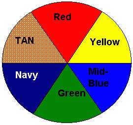

Getting Started
with
Oil Paints
by
Donal V. Buckley
 've
been using Windor & Newton and Daler Rowney Oils on metal
minis for about 5 years. I had been looking at some photos of
military models in "Military Modelling" magazine and while I
wasn't interested in the subject I was awed by the painting
techniques so I decided to give it a try. Oil paint gives a
"richness" and depth of colour that is unsurpassed by any
other medium but is inherently more difficult to work with.
If you are prepared to accept it's drawbacks then you will
be richly rewarded in your finished product.
've
been using Windor & Newton and Daler Rowney Oils on metal
minis for about 5 years. I had been looking at some photos of
military models in "Military Modelling" magazine and while I
wasn't interested in the subject I was awed by the painting
techniques so I decided to give it a try. Oil paint gives a
"richness" and depth of colour that is unsurpassed by any
other medium but is inherently more difficult to work with.
If you are prepared to accept it's drawbacks then you will
be richly rewarded in your finished product.
A Quick Introduction to Oil Painting Models
You will need:
- Brushes
- Turpentine
- Palette
- Oil Medium
- Paints
Brushes
Good quality sable brushes. Don't skimp on the quality here.
Brushes will last longer with Oil paints than any other medium
if looked after.
Turpentine
Turpentine is used for thinning and cleaning brushes.
Palette
I find disposable palettes where you tear off a sheet when
finished the best. However you could also use porcelain plate
or glass.
Oil Medium
Windor & Newton Liquin or Daler Rowney Medium No. 700. These
will speed drying time of the paints and also give a slight
gloss sheen. Turpentine can be used with some of the same effect.
Paints
Always use "Artist's" oils. These are the top quality in any range
with better pigmentation and permanence. Worth the few extra pence.
Tubes come in different sizes but oils have good covering ability
and will last a long time. I have been using the same tubes since
I started with oils 5 years ago. I have only had to buy more black
and white.
When buying Oils there are a few points that are particular to
consider.
- Opacity
- Sometimes marked on the tube, opacity indicates
how transparent the oil is. Red/Yellows are usually the least opaque.
- Permanence
- Usually marked on a scale of 1 to 4 (often marked
in stars). 4 being most permanent, (longest lasting).
- Hue
- Could be described as the Shade of the colour.
Can sometimes relate to Opacity.
Range of Paints
One of the advantages of Oils is the limited number of colours
that you need to start. Following is a good basic selection.
It is usually possible to buy this or a close approximation
of this range in an Oil Paint Beginners Set which often have
smaller tubes for good value.
Basic Palette
- Flake White
- Ivory Black
- Burnt Umber
- Raw Sienna
- Alizarin Crimson
- Scarlet Lake
- Cadmium Yellow
- Chrome Yellow
- Cobalt Blue
- Ultramarine
Extended Palette
- Titanium White
- Lamp Black
- Yellow Ochre
- Prussian Blue
- Vermilion
You will notice that there are no greens in the basic selection.
Another advantage of Oils is the extent to which they can be mixed.
With two blues and two yellows you can mix a wide range of greens.
You can of course buy Green oils for simplicity. It can be useful
to have 1 or 2 as bases or to save you time. I use Emerald Green
and Phtalocyanine (Phtalo) Green for these purposes. Also more
than other paints you can produce Shades by adding black and
Tints by adding white to the base colours.
Get the feel of the paint
On your palette paint 3 lines of paint, black, burnt umber and raw
sienna ( or yellow ochre ) near to each other. Using a clean dry
brush gradually blend the raw sienna into the burnt umber until
you have a even mix with no discernible join. Clean and dry the
brush and repeat for the burnt umber into black. This exercise
will show you how oils stay "wet" and also the "feel" of the paint.
Try this for different colour ranges, blue to white, red to purple etc.
I would also suggest mixing some colours at this point to see the
shades achievable, especially green.
Once you have a good selection of colours mixed and laid out you
can try for the whole rainbow effect. The more time you spend at
this stage getting to know the medium the easier it will be when
it comes to painting a model.
Drying time
This is the greatest obstacle to overcome when starting to use oils.
It can be anywhere from 12 hours to 6/7 days to dry. I find W & N
Flake white dries in about 12 hours if Liquin is added while the
Alizarin Crimson is the slowest. On a recent model with Matt Medium
and turpentine added it took 8 days. NO advice here except patience
but if you're already a model builder you've had to learn this. Now
you just need an exponential degree of it.
Consistency
Oil paints normally have the consistency of soft butter. You can
use the Liquin or turpentine to reduce this if you wish.
Amount
One of the biggest problems that I've seen with oils is
overloading the brush. Because of it's aforementioned consistency
it's easy to put too much on the model and you end up shoving a
lump of paint around the model. So you have to learn to judge the
amount you need more than with other paints.
Overall it's these "difficulties" with oils that are actually it's
strengths. You can blend oils better than any other medium
regardless of what you mix or retard them with. You can achieve
more subtle colours with a wider range and a greater richness.
The Colour Wheel
For the 90% of people who read this that are male; we need to be
taught this. Women have a basic genetic understanding of these
principles. Watch your girlfriend/wife when she goes shopping
or when she tells you which tie to wear with which shirt and pants.
(grin)
Below is a very basic colour wheel for advice on colours.

- Complementary Colour
- Any colours which are opposite each other complement, i.e. work
well together in a colour scheme. Red and green are my two favourite
colours in a fantasy colour scheme. I'll let you all into a little
secret. The two most visually complementary colour from a human
vision standpoint are black and yellow. These are very effective
colours to use to grab someone's attention. But remember you heard
it from me. I hope this doesn't mean a whole slew of red/green,
black/yellow models in the gallery soon. Apart from my own of course
if I ever get around to it.
- Contrasting
- Colours which are beside each other on the wheel and shouldn't
be used closely together as they "clash".
More extensive colour wheels can be bought in art supply shops which
expand this principle and will also show colour mixing charts but
generally once you understand the basic wheel you shouldn't need
anything else.
Shading and Highlighting
Below is a basic chart which I use mainly for 28mm mins where
shading and highlighting must be more pronounced.
| Basic Colour | Highlighting | Mid-Shadow | DarkShadow |
|---|
| Crimson | Pink | Lavender | Mid-Purple |
| Scarlet | Orange | Chestnut Brown | Dark Brown |
| Orange | Pale Orange | Chestnut Brown | Dark Brown |
| Yellow | Cream | Orange | Chestnut Brown |
| Green | Light Green | Green & Dark Blue | Mid-green & Black |
| Blue | Pale Blue | Mid-Blue | Black or Navy |
| Violet (Purple) | Lavender | Mid-Purple | Dark Purple |
| Buff | Cream | Dark Earth | Dark Brown |
| Tan | Peach | Chestnut Brown | Dark Brown |
| Black | Light Grey | Dark Grey | Black |
| White | White | Pale Grey | Dark Grey |
| Flesh (White and Red and Yellow) | Pale Flesh | Dark Flesh | Chestnut Brown |

The Gremlins in the Garage webzine is a production of
Firefly Design. If you have any questions or comments please
get in touch.
Copyright © 1994-1997
Firefly Design.